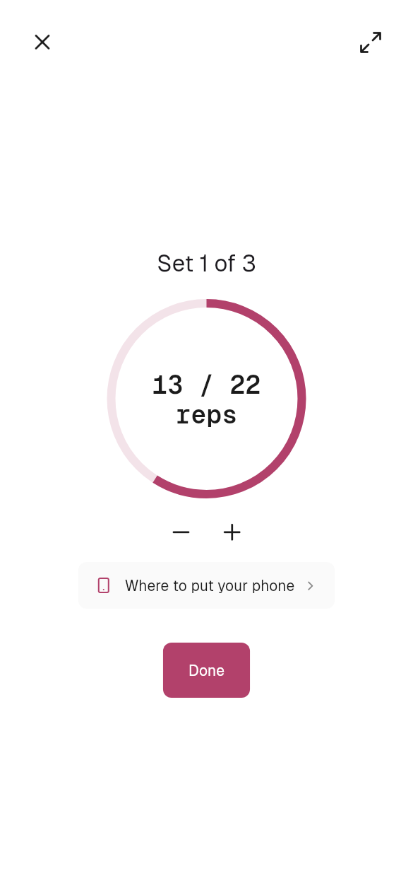
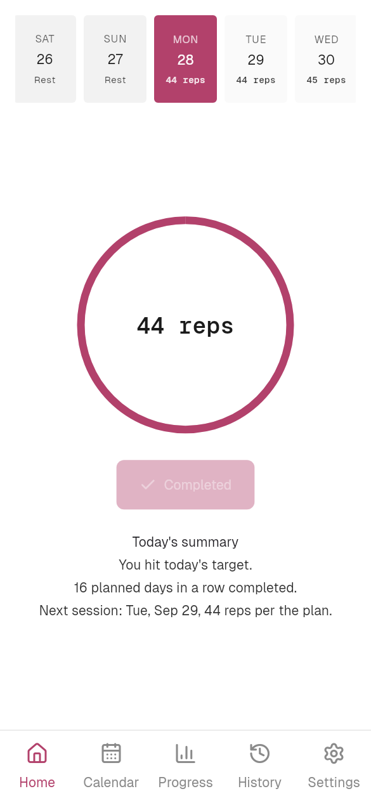
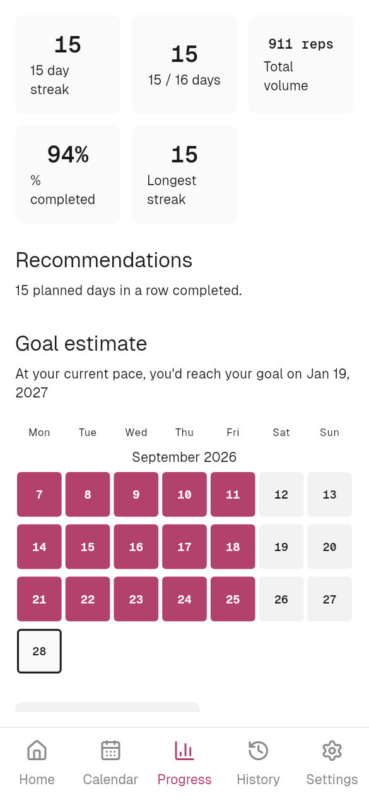
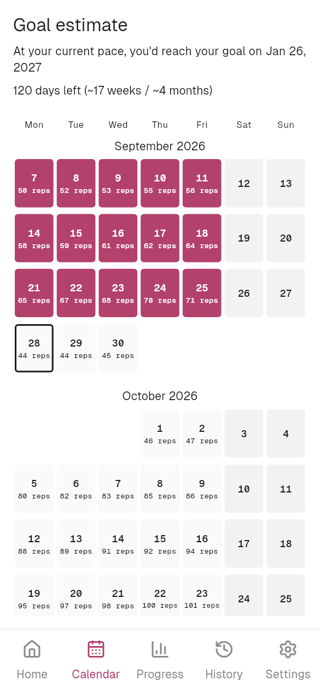
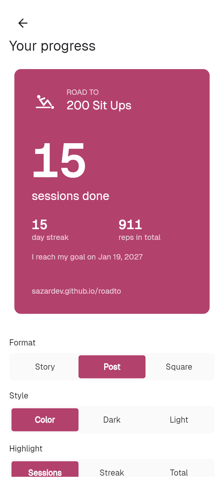
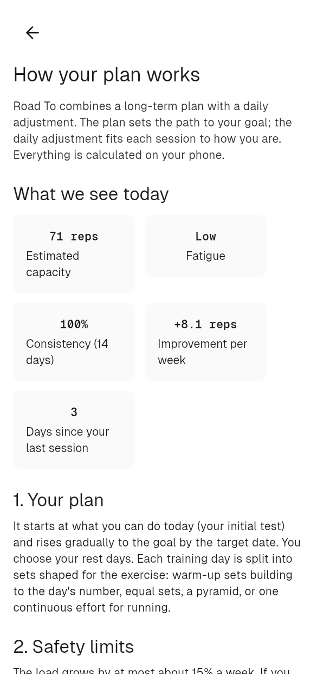

ROAD TO
200 Sit Ups
200 sit-ups on a plan that adapts to you.
Free, no accounts, no ads. · v0.9.0 · Lighter version, for most phones · All releases






It measures for you
Hold your phone against your chest: the accelerometer counts every sit-up.
How it works
01
You start where you are
Tell it how much you can do today and the plan starts there.
02
It adapts to you every day
Before each session you say how you feel. With that, your fatigue and your results it adjusts the session, and tells you why.
03
Progress without injury
At most 15 % more each week, a deload week every fourth, and a gradual comeback after a break.
04
You decide
Big changes to your plan are always your call.
05
Your data is yours
No accounts, no cloud, no ads: everything stays on your phone.
The Road To family
Road To SpartanSix challenges in one program: every day, the best exercise for you.
Road To 5 Min PlankA five-minute plank, second by second.
Road To 50 Pull UpsFrom hanging on the bar to 50 pull-ups.
Road To 100 Push UpsFrom your first push-up to 100 in a row.
Road To 10K RunningFrom your first meters to 10K.
Road To 100 Squats100 squats. One session at a time.